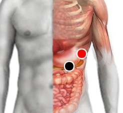

Verrugas
Pares
punta de pancreas - bazo
retrotensor facia lata - retrotensor facia lata

Generalidades:
Verruga común (de la bruja) causada por un virus (Papiloma).
Rastrear a la pareja en caso de reinfección.
Las verrugas son crecimientos del tejido en la piel causados por una infección por el virus del papiloma humano (VPH). También rastrear los pares del herpes, en especial el herpes VII.
Distintos tipos de verrugas:
En los niños, las verrugas suelen desaparecer en forma espontánea. En los adultos, tienden a permanecer. Si duelen o molestan o si se multiplican, es posible eliminarlas. Se pueden eliminar con tratamientos químicos, congelamiento o cirugía, pero esto no elimina al virus causante.